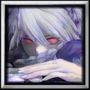
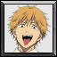

Player profile
nazarian
Rank #15server.eurobattle.netSeason 2
Most played · 竈門 炭治郎
Matches228 wins · 14 losses
Win rate36%
Avg K / D / A39.8 / 42.7 / 13.3
Avg APM105
Avg damage dealt255.4k
Avg damage taken183.1k
Heroes played
Explore heroes →| HERO | MATCHES | WIN RATE | AVG K / D / A | AVG DMG |
|---|---|---|---|---|
竈門 炭治郎Most played | 2 | 50% | 39.5 / 45.5 / 17.5 | 250.9k |
仮面ライダーエボルブラックホールフォーム | 2 | 0% | 38.0 / 34.0 / 12.0 | 261.5k |
Seha Lee | 1 | 100% | 45.0 / 37.0 / 16.0 | 237.2k |
 【完全で瀟洒なメイド】 | 1 | 100% | 46.0 / 36.0 / 19.0 | 245.0k |
Shirosaki | 1 | 100% | 56.0 / 39.0 / 14.0 | 360.3k |
Blade | 1 | 100% | 62.0 / 43.0 / 14.0 | 289.8k |
ゴクウブラック | 1 | 100% | 52.0 / 41.0 / 17.0 | 259.9k |
藍染 EX | 1 | 100% | 39.0 / 30.0 / 14.0 | 176.7k |
Shanks | 1 | 100% | 36.0 / 43.0 / 14.0 | 288.3k |
ロロノア・ゾロ | 1 | 0% | 29.0 / 48.0 / 11.0 | 230.5k |
雷電忘川守芽衣 | 1 | 0% | 39.0 / 46.0 / 19.0 | 357.1k |
復讐者 | 1 | 0% | 23.0 / 30.0 / 6.0 | 135.5k |
The Last Future of Embryo | 1 | 0% | 32.0 / 45.0 / 10.0 | 169.6k |
 チェンソーマン | 1 | 0% | 40.0 / 59.0 / 11.0 | 308.2k |
Kケイ・ダッシュ | 1 | 0% | 31.0 / 55.0 / 14.0 | 225.0k |
Shin Jinrui Sozo Keikaku | 1 | 0% | 37.0 / 46.0 / 6.0 | 211.9k |
『斬撃の花』 | 1 | 0% | 28.0 / 46.0 / 13.0 | 293.6k |
千子村正 | 1 | 0% | 26.0 / 40.0 / 8.0 | 203.7k |
黒崎 一護断界 | 1 | 0% | 86.0 / 39.0 / 11.0 | 420.0k |
Kenshiro | 1 | 0% | 14.0 / 57.0 / 17.0 | 182.6k |
Averages use recorded statistics only; unavailable historical values are shown as —.
Recent matches
Open a match for its scoreboard and kill matchups.
LOSS63:35
MCB #2000218
08 Nov 2026 · 17:41 WIB
29.0 / 48.0 / 11.0View match →
LOSS75:38
MCB #2000217
08 Nov 2026 · 16:31 WIB
39.0 / 46.0 / 19.0View match →
WIN56:32
MCB #2000216
08 Nov 2026 · 15:08 WIB
45.0 / 37.0 / 16.0View match →
LOSS67:29
MCB #2000215
08 Nov 2026 · 00:26 WIB
23.0 / 30.0 / 6.0View match →
WIN55:44
MCB #2000214
07 Nov 2026 · 22:20 WIB
46.0 / 36.0 / 19.0View match →
WIN57:12
MCB #2000212
07 Nov 2026 · 17:03 WIB
56.0 / 39.0 / 14.0View match →
LOSS53:59
MCB #2000211
07 Nov 2026 · 04:25 WIB
32.0 / 45.0 / 10.0View match →
LOSS61:29
MCB #2000210
07 Nov 2026 · 02:00 WIB
40.0 / 59.0 / 11.0View match →
WIN62:48
MCB #2000209
07 Nov 2026 · 00:02 WIB
62.0 / 43.0 / 14.0View match →
WIN60:08
MCB #2000208
06 Nov 2026 · 01:55 WIB
52.0 / 41.0 / 17.0View match →